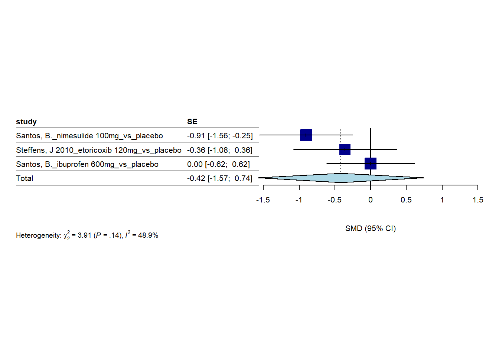
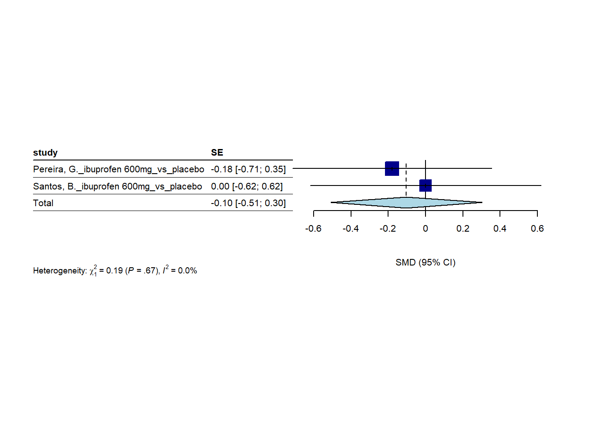
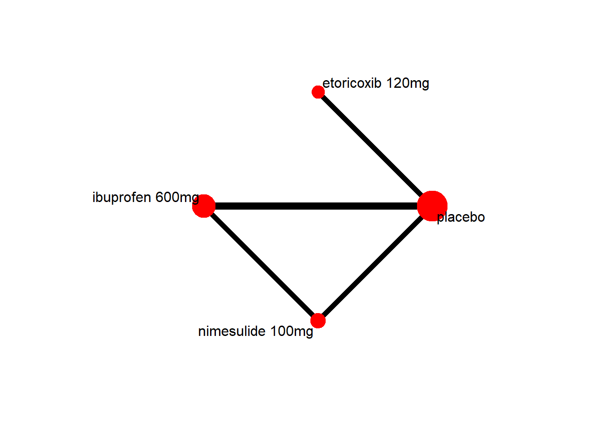
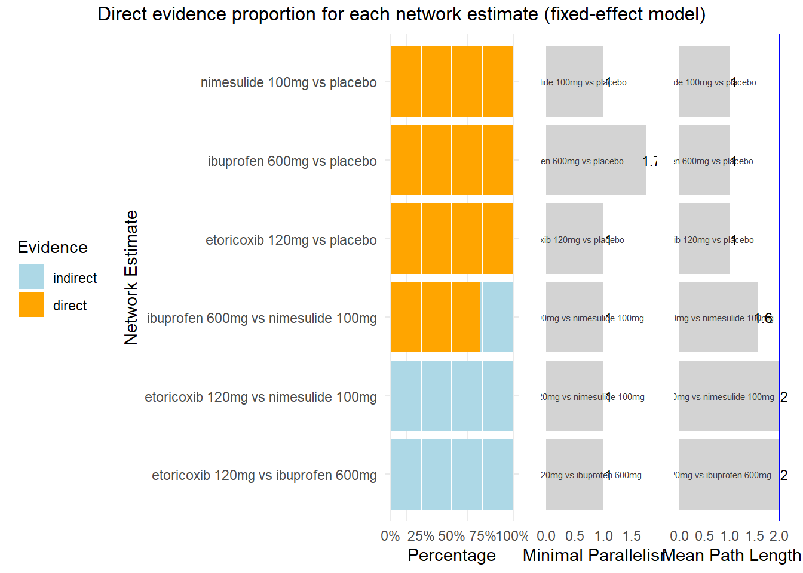
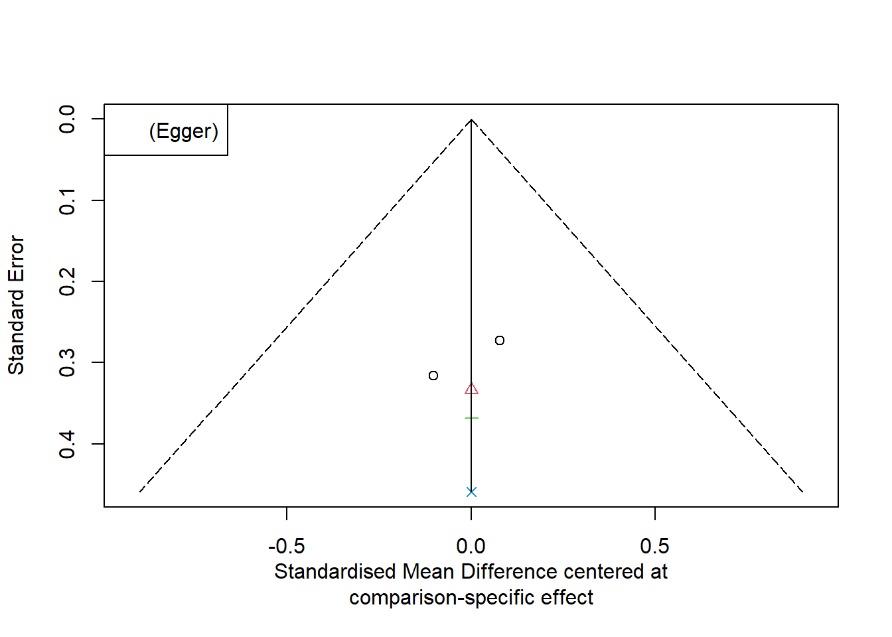

3 days
2024-05-13
Last updated: 2025-02-07
Checks: 5 2
Knit directory: Collaborations/
This reproducible R Markdown analysis was created with workflowr (version 1.7.1). The Checks tab describes the reproducibility checks that were applied when the results were created. The Past versions tab lists the development history.
The R Markdown file has unstaged changes. To know which version of
the R Markdown file created these results, you’ll want to first commit
it to the Git repo. If you’re still working on the analysis, you can
ignore this warning. When you’re finished, you can run
wflow_publish to commit the R Markdown file and build the
HTML.
Great job! The global environment was empty. Objects defined in the global environment can affect the analysis in your R Markdown file in unknown ways. For reproduciblity it’s best to always run the code in an empty environment.
The command set.seed(20210523) was run prior to running
the code in the R Markdown file. Setting a seed ensures that any results
that rely on randomness, e.g. subsampling or permutations, are
reproducible.
Great job! Recording the operating system, R version, and package versions is critical for reproducibility.
Nice! There were no cached chunks for this analysis, so you can be confident that you successfully produced the results during this run.
Using absolute paths to the files within your workflowr project makes it difficult for you and others to run your code on a different machine. Change the absolute path(s) below to the suggested relative path(s) to make your code more reproducible.
| absolute | relative |
|---|---|
| C:/Shengtong/Research/AllCollaboration/Collaborations/analysis/Rfunctions.R | analysis/Rfunctions.R |
Great! You are using Git for version control. Tracking code development and connecting the code version to the results is critical for reproducibility.
The results in this page were generated with repository version 9747c68. See the Past versions tab to see a history of the changes made to the R Markdown and HTML files.
Note that you need to be careful to ensure that all relevant files for
the analysis have been committed to Git prior to generating the results
(you can use wflow_publish or
wflow_git_commit). workflowr only checks the R Markdown
file, but you know if there are other scripts or data files that it
depends on. Below is the status of the Git repository when the results
were generated:
Ignored files:
Ignored: .Rhistory
Ignored: analysis/.Rhistory
Ignored: analysis/2022_Mar2_Marinho_cache/
Unstaged changes:
Modified: analysis/2023_0301_Christos_3days.Rmd
Note that any generated files, e.g. HTML, png, CSS, etc., are not included in this status report because it is ok for generated content to have uncommitted changes.
These are the previous versions of the repository in which changes were
made to the R Markdown
(analysis/2023_0301_Christos_3days.Rmd) and HTML
(docs/2023_0301_Christos_3days.html) files. If you’ve
configured a remote Git repository (see ?wflow_git_remote),
click on the hyperlinks in the table below to view the files as they
were in that past version.
| File | Version | Author | Date | Message |
|---|---|---|---|---|
| Rmd | c3387b8 | han | 2025-01-31 | 1/31/2025 |
| html | c3387b8 | han | 2025-01-31 | 1/31/2025 |
| Rmd | 09e086f | han | 2024-10-23 | 10/23/2024 |
| html | 09e086f | han | 2024-10-23 | 10/23/2024 |
| Rmd | e32c019 | han | 2024-10-14 | 10/14/2024 |
| html | e32c019 | han | 2024-10-14 | 10/14/2024 |
| Rmd | c576e55 | han | 2024-10-02 | 10/2/2024 |
| html | c576e55 | han | 2024-10-02 | 10/2/2024 |
| Rmd | ab2050b | han | 2024-06-05 | 6/5/2024 |
| html | ab2050b | han | 2024-06-05 | 6/5/2024 |
| Rmd | ba6d4d5 | han | 2024-05-31 | 5/31/2024 |
| html | ba6d4d5 | han | 2024-05-31 | 5/31/2024 |
| Rmd | 4e76c78 | han | 2024-05-30 | 5/30/2024 |
| html | 4e76c78 | han | 2024-05-30 | 5/30/2024 |
| Rmd | d32b3b6 | han | 2024-05-24 | 5/24/2024 |
| html | d32b3b6 | han | 2024-05-24 | 5/24/2024 |
| Rmd | 7e28076 | han | 2024-05-13 | 5/13/2024 |
| html | 7e28076 | han | 2024-05-13 | 5/13/2024 |
Home
72 hours
sample data
forest plot
3 days - Studies per surgery
MA 1 – periodontal flap surgery
- random effect model

- fixed effect model
- raw difference -0.14
> -0.41*(3)^0.5*(-0.03+0.79)/3.92 [1] -0.1376804
3 days - Studies per medication
ibuprofen 600mg
- random effect model
- fixed effect model

nimesulide 100mg
- fixed effect model
dexamethasone 8mg
3 days - Studies only with ibuproben
- fixed effect model

3 days - Studies only with dexamethazone
dexamethasone 8mg
3 days - Sensitivity analysis
- random effect model

- fixed effect model
- raw difference -0.07
> -0.31*(4)^0.5*(-0.09+0.54)/3.92 [1] -0.07117347
network meta-analysis
random effect model
#########################
treat1=treat2=study=character()
for (i in 1:length(comparison))
{
position=unlist(gregexpr('_', comparison[i]))
treat1[i]=substring(comparison[i],position[1]+1,last=position[2]-1)
treat2[i]=substring(comparison[i],position[3]+1,last=1000000L)
study[i]=substring(comparison[i], 1,last=position[1]-1)
}
m1 <- metacont(samplesize_exp, mean_exp, sd_exp, samplesize_contr, mean_contr, sd_contr,
data = data_meta, sm = "SMD")
remove_index=2 # remove one ibuprofen 600mg in Santos, B.
data_meta_network=data.frame(study=study[-remove_index], TE=m1$TE[-remove_index], seTE=m1$seTE[-remove_index], treat1=treat1[-remove_index], treat2=treat2[-remove_index])
m.netmeta <- netmeta(TE = TE,
seTE = seTE,
treat1 = treat1,
treat2 = treat2,
studlab = study,
tol.multiarm=0.1,
# tol.multiarm.se = NULL,
data = data_meta_network,
sm = "SMD",
fixed = FALSE,
random = TRUE,
reference.group = "placebo",
details.chkmultiarm = TRUE,
sep.trts = " vs ")
#summary(m.netmeta)
#3 days
#Nimesulide 100mg – 20
#Etoricoxib 120mg – 15
#Ibuprofen 600mg – 47
#Placebo - 82
sample_size=c(15, 47, 20, 82)
node_size <- sqrt(sample_size / max(sample_size))*10
long.labels=m.netmeta$trts
#netgraph(m.netmeta,
# labels = long.labels, number.of.studies = TRUE,
# )
netgraph(m.netmeta,
labels = long.labels,
number.of.studies = TRUE,
plastic = FALSE, # Ensures standard network layout
lty = rep(1, length(m.netmeta$trts)), # Set all links to solid lines
lwd = 2, # Increase line width for clarity
col = "black", # Set edge color to black
col.points = "red",
cex.point= node_size,
col.number = "cyan" # Change the color of numbers on edges
)

- a mean path length > 2 means that a comparison estimate should be interpreted with particular caution.
P-score
nimesulide 100mg 0.9383
etoricoxib 120mg 0.5410
ibuprofen 600mg 0.3797
placebo 0.1409
Q statistics to assess homogeneity / consistency
Q df p-value
Total 0.00 0 --
Within designs 0.00 0 --
Between designs 0.00 0 --
Q statistic to assess consistency under the assumption of
a full design-by-treatment interaction random effects model
Q df p-value tau.within tau2.within
Between designs 0.00 0 -- 0 0transitivity analysis (consistency between direct vs indir)
netsplit(m.netmeta)netsplit(m.netmeta) %>% forest(fontsize = 8, spacing = .4) # visualize the net split resultsfunnel(m.netmeta, order=unique(m.netmeta$treat1), pch=seq(1:3), col=seq(1:3), linreg = T, legend = F, digits.pval=2)
| Version | Author | Date |
|---|---|---|
| c576e55 | han | 2024-10-02 |
funnel(m.netmeta, order=unique(m.netmeta$treat1), pch=seq(1:3), col=seq(1:3), linreg = F, legend = F, digits.pval=2)
| Version | Author | Date |
|---|---|---|
| e32c019 | han | 2024-10-14 |
fixed effect model
P-score
nimesulide 100mg 0.9383
etoricoxib 120mg 0.5410
ibuprofen 600mg 0.3797
placebo 0.1409
Q statistics to assess homogeneity / consistency
Q df p-value
Total 0.00 0 --
Within designs 0.00 0 --
Between designs 0.00 0 --
Q statistic to assess consistency under the assumption of
a full design-by-treatment interaction random effects model
Q df p-value tau.within tau2.within
Between designs 0.00 0 -- 0 0
sessionInfo()R version 4.3.2 (2023-10-31 ucrt)
Platform: x86_64-w64-mingw32/x64 (64-bit)
Running under: Windows 10 x64 (build 19045)
Matrix products: default
locale:
[1] LC_COLLATE=English_United States.utf8
[2] LC_CTYPE=English_United States.utf8
[3] LC_MONETARY=English_United States.utf8
[4] LC_NUMERIC=C
[5] LC_TIME=English_United States.utf8
time zone: America/Chicago
tzcode source: internal
attached base packages:
[1] grid stats graphics grDevices utils datasets methods
[8] base
other attached packages:
[1] dmetar_0.1.0 netmeta_3.0-2 meta_8.0-2
[4] metadat_1.2-0 VennDiagram_1.7.3 futile.logger_1.4.3
[7] condsurv_1.0.0 devtools_2.4.5 usethis_3.1.0
[10] tidycmprsk_1.1.0 gtsummary_2.0.4 ggsurvfit_1.1.0
[13] irr_0.84.1 lpSolve_5.6.23 readxl_1.4.3
[16] cowplot_1.1.3 matrixStats_1.5.0 gridExtra_2.3
[19] DT_0.33 rstatix_0.7.2 ggpubr_0.6.0
[22] kableExtra_1.4.0 lubridate_1.9.4 forcats_1.0.0
[25] stringr_1.5.1 dplyr_1.1.4 purrr_1.0.2
[28] readr_2.1.4 tidyr_1.3.1 tibble_3.2.1
[31] ggplot2_3.5.1 tidyverse_2.0.0
loaded via a namespace (and not attached):
[1] mathjaxr_1.6-0 rstudioapi_0.17.1 jsonlite_1.8.9
[4] magrittr_2.0.3 modeltools_0.2-23 farver_2.1.2
[7] nloptr_2.0.3 rmarkdown_2.29 fs_1.6.5
[10] vctrs_0.6.5 memoise_2.0.1 minqa_1.2.6
[13] CompQuadForm_1.4.3 htmltools_0.5.8.1 lambda.r_1.2.4
[16] tictoc_1.2.1 broom_1.0.7 cellranger_1.1.0
[19] Formula_1.2-5 sass_0.4.9 bslib_0.9.0
[22] htmlwidgets_1.6.4 poibin_1.6 futile.options_1.0.1
[25] cachem_1.1.0 whisker_0.4.1 mime_0.12
[28] lifecycle_1.0.4 pkgconfig_2.0.3 Matrix_1.6-1.1
[31] R6_2.5.1 fastmap_1.2.0 shiny_1.10.0
[34] magic_1.6-1 digest_0.6.33 numDeriv_2016.8-1.1
[37] colorspace_2.1-0 rprojroot_2.0.4 pkgload_1.4.0
[40] crosstalk_1.2.1 labeling_0.4.3 timechange_0.3.0
[43] abind_1.4-8 compiler_4.3.2 remotes_2.5.0
[46] withr_3.0.2 backports_1.5.0 metafor_4.8-0
[49] carData_3.0-5 pkgbuild_1.4.6 ggsignif_0.6.4
[52] MASS_7.3-60 sessioninfo_1.2.2 tools_4.3.2
[55] prabclus_2.3-4 httpuv_1.6.15 nnet_7.3-19
[58] glue_1.8.0 nlme_3.1-163 promises_1.3.2
[61] cluster_2.1.4 generics_0.1.3 gtable_0.3.6
[64] tzdb_0.4.0 class_7.3-22 hms_1.1.3
[67] flexmix_2.3-19 xml2_1.3.6 car_3.1-3
[70] ggrepel_0.9.6 pillar_1.10.1 later_1.4.1
[73] robustbase_0.99-4-1 splines_4.3.2 lattice_0.21-9
[76] survival_3.8-3 tidyselect_1.2.1 miniUI_0.1.1.1
[79] knitr_1.49 git2r_0.35.0 svglite_2.1.3
[82] stats4_4.3.2 xfun_0.50.6 diptest_0.77-1
[85] DEoptimR_1.1-3-1 MuMIn_1.48.4 stringi_1.8.3
[88] workflowr_1.7.1 yaml_2.3.8 boot_1.3-28.1
[91] evaluate_1.0.3 kernlab_0.9-33 cli_3.6.2
[94] xtable_1.8-4 systemfonts_1.2.1 munsell_0.5.1
[97] jquerylib_0.1.4 Rcpp_1.0.11 parallel_4.3.2
[100] ellipsis_0.3.2 mclust_6.1.1 profvis_0.4.0
[103] urlchecker_1.0.1 lme4_1.1-35.1 viridisLite_0.4.2
[106] mvtnorm_1.3-3 scales_1.3.0 fpc_2.2-13
[109] rlang_1.1.2 formatR_1.14